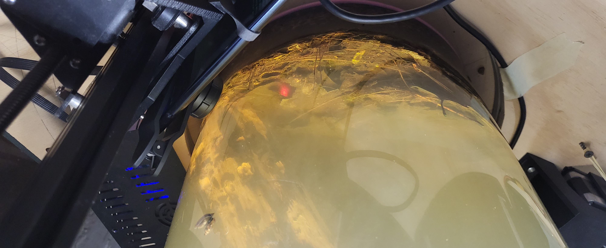
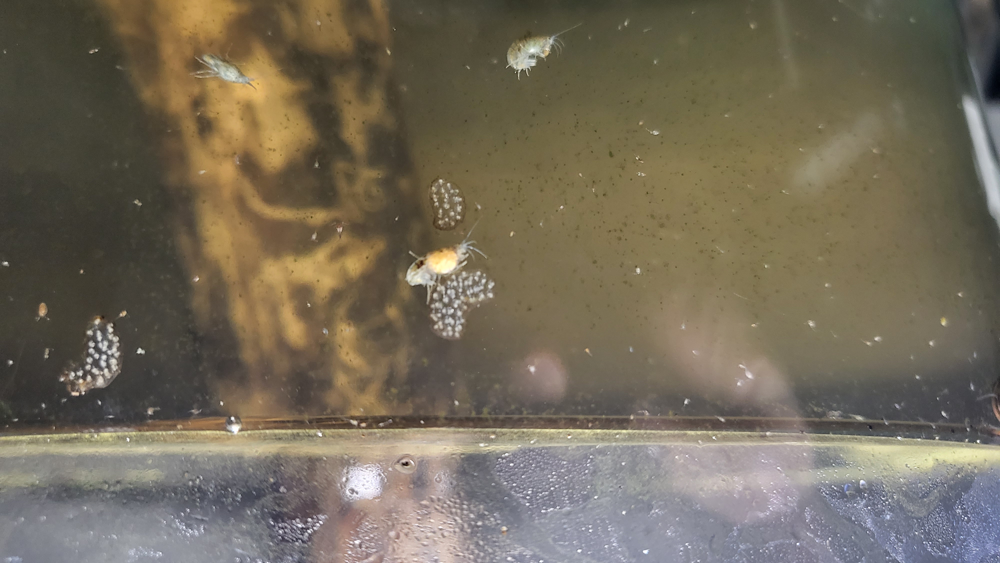
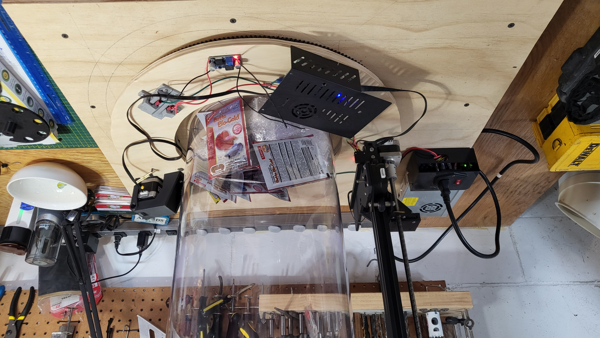
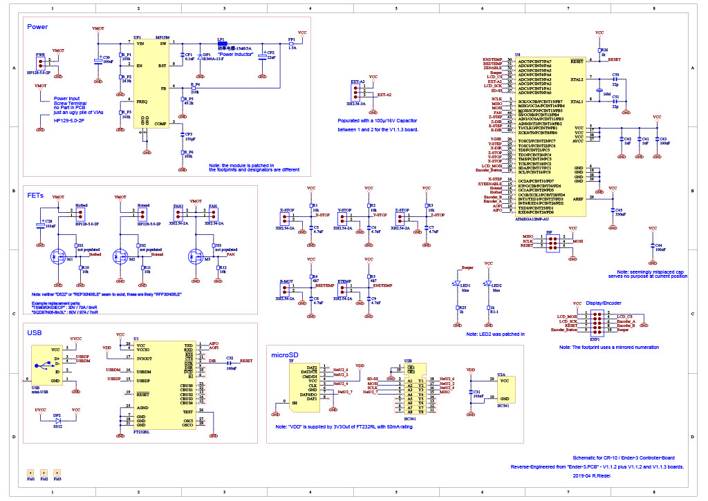
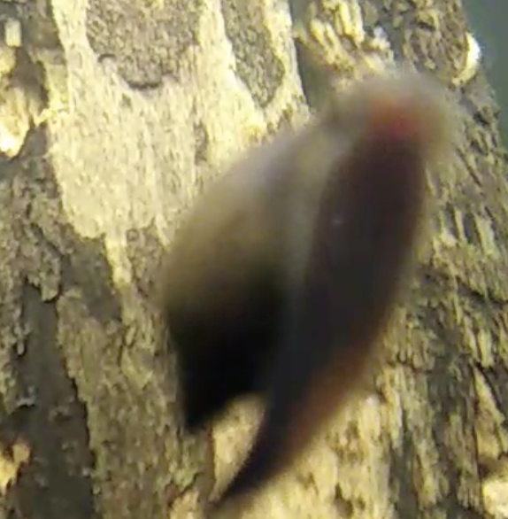

Twitch Controlled Biosphere
A community-operated robotic camera made of scrap electrical components

I have made biospheres throughout my youth, and always wanted to share them with others. A sealed aquatic environment, they require ample light so the algae and plants within produce enough oxygen and food for the snails, shrimp, and water bugs inside. With this robot, users can join a Twitch stream and enter commands to manipulate the camera's position around the tank, searching for tiny animals, snail eggs, and alien vistas. It currently streams 48 hours at a time, with frequent visitors who love playing with the camera.
How It Was Made
The terrarium itself was made with riverbed soil and water from the streams and ponds around North Eastern Massachusetts.
The frame and platform are made of scrap plywood, with all electronics and metal structural components made from the old parts of an Ender 3 3D printer. The platform is held up by a lazy-susan, modified to hold the platform securely to the frame, and it is turned by a large 3d-printed gear underneath, meshing with a driven gear on the platform. 24v Power gets to the platform by a pair of homemade copper rails that run under the platform, and graphite brushes.
The motors are controlled via a Creality 1.1.4 control board, which I wiped and rewrote the firmware for, with help from others in the community who mapped out the board's layout. The board firmware was written by me in the Arduino IDE, with bugfixing assisted by Claude.
The phone is a Motorola Moto g(6), and acts as camera and control. It collects chat logs from Twitch, converts them into commands, manipulates the camera or sends commands to the motor controller via Bluetooth, and streams music, camera footage, and UI to a Twitch stream via the Camera2 api and a rtmp stream. I've never worked with Kotlin before, so I organized and wrote all behavior as pseudocode and had Claude interpret the input into a well organized and architectured application. I then spent two weeks learning Kotlin to debug my well organized and architectured application.
Screenshots



